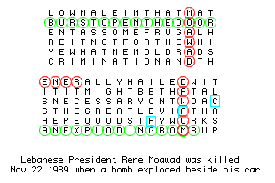
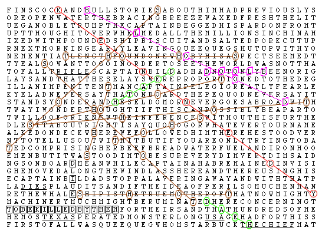
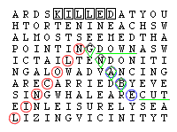

Signal v. Noise: They will beat their swords into PLOW shares and their spears into pruning hooks. -Isaiah 2:4
Adam Marshall Dobrin <adam5@reallyhim.com>
Thu, Dec 15, 2016 at 10:54 AM
To: yitshack@or.shiningbright.online, Adamas Mars-Elyon Dobrin <adam@weare.fireborn.xyz>
For a few decades now SETI has aimed satellites at the sky looking for intelligent communication being transmitted towards us from outer space. They are looking for a signal that is transmitted at a certain frequency, a "skip" in the radio spectrum. Below, you are here given an example of what I consider intelligent communication--this stuff is woven into the "noise" of Moby DIck and the Holy Bible--probably everything around us... but to get to a point where people are open an interested in actually reading the message God has left for the entire world--written all over everything... I first have to prove that he exists, and that he is speaking to us, through our very own hands. I need your help to do that, I don't know if this is the right way to attack the problem, but to me... the Bible Code is very clearly a signal hidden within noise--take that from that what you will.
I am of the opinion that this is a problem similar to code cracking, to decryption--just as I see language translation. I am sure that the "Bible Code" is a mathematically solvable problem, just as the "hidden language" I read hidden within language ... within the names things like cities, Kentucky: Kent you CK why, Jerusalem: is J er the USA the messiah; Maryland--there are so many examples--ones which show a clear tie to the Matrix--I mean to the question that must never be answered. I need this code cracked. The world needs it cracked.
It dawned on me this morning that my name alone might give you the ammunition you need to prove that this signal comes through time--across both NT and OT books... possibly a number of books that are not Biblical. You might find more noise in Ender's Game, The House of the Scorpion, and Feed--those are the places I would look... if I needed to look outside the Bible. I happen to know that my name is encoded over the Eden story along with the name of my ex-wife, PISANI. I see my name encoded over "Jesus Christ" at Isiaah 52:13; which is quite the important verse--for me. I am sure I found it before in Jeremiah, and Revelation, and Exodus--I bet you find it near the stories of Lazarus and Samson too. I'm sure it's in a great many books--and that it probably will be the kind of thing that can be proven to be non-coincidental, non-random to some degree that nobody in their right mind would call something as glaringly obvious of a sign ... "chance" that you see below. The assassination in Moby Dick--the name Mob-why; and the ridiculously accurate descriptions of murder weapons attached to the names and dates.... it's something that sickens me that this has been allowed to be called "normal."
This is the Apocalypse, the Holy Grail--make a name for yourself; and save the world at the same time.
I'll leave you with this. Merry Christmas. You can talk to me, I am not a crazy person. adam at from the machine dot org
y
$ee the light of Christiadamity.
---------- Forwarded message ----------
From: Adam Marshall Dobrin<adam5@reallyhim.com> Date: Sun, Dec 11, 2016 at 9:15 AM Subject: Signal v. Noise: They will beat their swords into PLOW shares and their spears into pruning hooks. -Isaiah 2:4 To: vivastanlee@myhero.of.hoy
Come and see
I swear by now I'm playing time against ((your)) troubles I'm coming slow but speeding Do you wish a dance and while I'm in the front The play on time is won
As a quick note, the "signal" I have been presenting for over a year now is a form of speech; like a simple cipher or the translation of an unknown language... this signal is a problem that is mathematically solvable. If the speech exists, and it does, there is a way to verify that it comes from a single source--one which, in this particular case, is speaking to you not only through words and art, but through a map that happens to be our planet--from the first days of civilization at the city "you are" the beginning, that's Ur.. all the way to today. Finding why "you are the beginning" is at that particular location in space time is a good way to extract the signal from the noise when it comes to this map to salvation. In this odd little introduction to a very odd message.. I'll note that the inverted word "mafia" appears to have something to do with Artificial Intelligence, and family. Sans, well, "I El and why."
Proving that this message is actually contextually intelligent--that there's a reason the words "mob" and "why" appear in Moby Dick, and that it's likely related to the prediction of a series of assassinations--that is the "stuff" of proving that there is a God. It's the pursuit of the Holy Grail, which in context is probably the purpose of religion--to seek the meaning the Creator has written all over our world. Less to the point, once it is proven to be... meaningful... it opens the doors for the entire world to seek and read a message that they most likely would be very interested in hearing.
That is, if you can see beyond Phillip K. Dick's solution to the gap between technology and today; beyond Yankee Doodle's coded words and beyond John Hancock and Richard Nixon signing this message of the deliverance of freedom revolving not inconsequentially around things like taped phone calls and satellite surveillance that you might associate with Watergate and A Scanner Darkly--with the blood of those who would dare to slaughter the Lamb. Find some religion, I'm showing you "the face of God." It is the message, I hope you see--the words of the prophets... not only in the name but in the works of everything PKD--not only in the names, but in the works of everything Watergate--do you not understand why that story has been highlighted?
Round and round in this circle we swirl; eye on the prize--I used to say--keep your eye on now. In a blur, somewhere between crazy and creative, hear his words... in the end, "you will have no doubt." Dear Rapunzel, won't you let your hair down? Fighting against the tides and the winds, ever step forward followed by a stumble down that must be part of the plan, of the well trodden road. I see quite clearly how this cipher I am revealing appears to be the stuff of insanity--if you think about it... it really could have been hidden no other way. Why hide it at all; you might wonder in that infantile place of awe and inspiration that might be more like a crib than a bed of lies. Still the farther down this rabbit hole I travel, the more I see--spoon fed into my mind as if it was the holy grail itself--more light each and every day. The evidence, that's what it really is, compounds on itself, the returns coming in stronger and stronger the more you try to grasp, the wider your gaze.
It's already bested the courts, and believe it or not kept the darker crevices of government from standing in my way--believe it or not before the night is done you will have my name and my light painted all over the Universe--imagine that. It's done already.
I'll tell you what it didn't do, it did not attract the press, unless bringing Al Jazeera America all the way to Plantation... only to be shut down while in the process of doing a story on the very court I was in is "attraction." Is that what you are worried about? Maybe you should be, or maybe you should be worried that this machine of suppression of the truth--now in control of the entirety of the media... that it will continue to exist if you do not act.
It did somehow coerce the head Public Defender to type the words "physician, heal thyself"in response to some advice on avoiding Armageddon by fighting the conditions of the BSO Jail; something I am sure is nothing more than a slightly time--and intentional cruelty--advanced prototype for Everytown--on the edge of the abyss.
He had to run for a different reason, the first time this life was lived--quite literally to save his soul... to escape the grasp of a conspiracy that the Zohar and midrash--even the book of Judges speaks of a conspiracy against my life--one that threatens nothing but your freedom in this day, sometime in the 37th year of this hidden life. In the name of Barnabas and the concept of the Ba from Egypt--a clear picture of the boy being sacrificed to protect the spirit--something we will not be repeating.
Each and every time I speak; with knowledge of the past versions of this traversal through the night, described ever so clearly in the Egyptian book of the Underworld--the AMDuat--AMD you are "@" here. Behind the eyes of Ra, who knows how many kings and Pharaoh's--how many rock stars and taxi drivers souls anxiously await the fulfillment of some promise, of a "oneness with God." Do you think it's what "jump into the son" really means? Who do you think is watching this spectacle go down?
"Pockets full of high," I stumble into a well spun story designed by the three fates themselves, The meaning of Christ's name, El Elyon--one might only ask why. Setup, and very, very high--echoes Isaiah 52:13 in the seminal premonition of the Second Coming that hands on a sliver platter my given name crossed directly on top of the words "Jesus Christ," "framed" and "mafia." Not so far away, in the magical land of Mary the subcontracted companies responsible for the NSA's sale of privacy and identity to the Vatican and their not-so-secret global network of subversion; they might wonder aloud how it is that Mary's name tells me so surely what it is that we fight against--truly--"the enemy" of Almost Famous, it's corruption and secrecy and believe I know where it's rooted. Look to an ancient story, the old fall of Rome to figure out why it is that corruption never "wins the day." This will falter, a low of 666 on the S&P we're already on the way. then another all time high, haven't you had enough of this roller coaster ride?
Say Maryland one more time, and just like the land of Clark Kent "you are CK why?" you might begin to see every single day from here forward how God has written a map to Salvation, and plastered it all over the globe. Salud.
They own the Police, the courts, and the press too--"I've had enough, we're not property.... and I am Stronger than yesterday." Secrets and lies, there's your real systemic risk. I am a glowing sign, everything they do wrong in a neat little package for the future to unwrap. Light me up, the future is tomorrow.
What a world I've been tossed into. Who are they? Has anyone ever really seen them? I haven't. Weird little invisible body snatchers... or no? Is the Lord of Hosts something else?
2014, Charleston South Carolina; I stared up at the sky--well hidden itself by a roof ful of popcorn and three days awake; and it came alive. The whole ceiling like an LCD display from Sky-net, just like at the ball game--except the pixels were plaster--"Hello Adam" and "wow," complete with animated special effects, for all of thirty seconds a hallucination, or a delusion, please--this wasn't trails and a halo around lights... words on the sky from where?
The shrinks and the spooks, the blind fools hiding clear communication from the beyond--they'll learn to listen, I swear. "Lesson for them, not me." Rumors insisted? Taken into custody? A story written in stone and blood, one designed to bring about a golden renaissance, one I will see with my own eyes.
A little over a year earlier--every time I danced into "Morpheus's rabbit hole" the same face appeared in my chandelier. He looked like a puppet, this prop, a little like King Friday only holding a magic wand that he waved. Literally on one of those days I heard Pope Francis exclaim on the radio "God is not magical," earning a chuckle from me.
You might never hear the stories told to me; at least not here. I'm doing everything I can to give you what you need- a catalyst to wake up and take control.
I've shown you science.. chemistry and computers... at the heart of Christianity; and still you fail to see the light--the magic is coming, the show and the steal. I'm really telling you why, how this lead me down a path where the enemy was sure I'd lost--a life preserved from a den of fools--not seeing themselves lit with spotlights in the sky.
Did you need more light? More proof? Another tie between JC and me, or religion and now? Come on, have a heart... not getting this message spells "the end."
The stock ticket "PLOW" was chosen psuedorandomly.
Genesis 1:1-4. Biblia Hebraica from Kittel's edition (BHK) 1909. Four letters, 50 letters apart, starting from the first taw on the first verse, form the word תורה (Torah).
Exodus 1:1-6. Biblia Hebraica from Kittel's edition (BHK) 1909. Four letters, 50 letters apart, starting from the first taw on the first verse, form the word תורה (Torah).
The Bible code (Hebrew: הצופן התנ"כי, hatzofen hatanachi), also known as the Torah code, is a purported set of secret messages encoded within the Hebrew text of the Torah. This hidden code has been described as a method by which specific letters from the text can be selected to reveal an otherwise obscured message. Although Bible codes have been postulated and studied for centuries, the subject has been popularized in modern times by Michael Drosnin's book The Bible Code and the movie The Omega Code.
Many examples have been documented in the past. One cited example is that by taking every 50th letter of the Book of Genesis starting with the first taw, the Hebrew word "torah" is spelled out. The same happens in the Book of Exodus. Modern computers have been used to search for similar patterns and more complex variants, as well as quantifying its statistical likelihood.
Some tests purportedly showing statistically significant codes in the Bible were published as a "challenging puzzle" in a peer-reviewed academic journal in 1994, and later questioned.
They didn't like my additions. Finish the pattern.
From Wikipedia, the free encyclopedia
The Bible code (Hebrew: צפנים בתנ"ך), also known as the Torah code, is a purported set of secret messages encoded within the Hebrew text of the Torah. This hidden code has been described as a method by which specific letters from the text can be selected to reveal an otherwise obscured message. Though Bible codes have been postulated and studied for centuries, the subject has been popularized in modern times by Michael Drosnin's book The Bible Code and the movie The Omega Code.
Many examples have been documented in the past. One cited example is that by taking every 49th letter of the Book of Genesis starting with the first taw, the Hebrew word "torah" is spelled out, the same happens in the Book of Exodus. The word "torah" is spelled in reverse order, in the same manner, in the Book of Numbers and the Book of Deuteronomy. The Book of Leviticus, contains the Tetragramatton encoded using ELS with a skip of 7, with all four other books pointing towards it. The word Modern computers have been used to search for similar patterns and more complex variants, and published as a "challenging puzzle" in a peer-reviewed academic journal in 1994. Proponents hold that it is exceedingly unlikely such sequences could arise by chance, while skeptics and opponents hold that such sequences do often arise by chance, as demonstrated on other Hebrew and English texts.[1]
Moby Dick? It' is intelligence; the source of consciousness and definition of language... the need and ability to see the signal within the noise.
For instance, you might notice the words "mob" and "why," joined together... predicting perhaps the most iconic Dick in all of history. Or, you might need to read more of the noise to really get the signal. It's such a simple scientific clue--that this is nothing more than stenography, one message hidden within another; a scientific process that can be easily deciphered and proven to be intentional. It's simple science to prove that the Bible Code is statistically significant--something that people like Michael Drosnin should be very sure of.
The following challenge was made by Michael Drosnin:
When my critics find a message about the assassination of a prime minister encrypted in Moby Dick, I'll believe them. (Newsweek, Jun 9, 1997)
Note that English with the vowels included is far less flexible than Hebrew when it comes to making letters into words. Nevertheless, without further ado, we present our answer to Mr Drosnin's challenge.
Prime Minister Indira Gandhi
President Rene Moawad

Soviet exile Leon Trotsky
The Reverend Martin Luther King
(The underlined words were found by Shannon Kohl)
Chancellor Engelbert Dollfuss
The assassin Sirhan Sirhan
John F. Kennedy
President John F. Kennedy was shot in the head by an assassin who quietly waited in a concealed place. It was in Texas, November 1963, during a presidential motorcade.

Abraham Lincoln
President Abraham Lincoln was shot dead on April 14, 1865.

Yitzhak Rabin
Israeli prime minister Yitzhak Rabin was shot dead on November 4, 1995. His assassin was Igal Amir, who fired three shots of which one hit Rabin fatally in the chest. Amir was a student at Bar-Ilan University, and associated with an underground group Eyal which modelled itself on a historical terrorist group called Lehi. Amir was angered by Rabin's role in the "Peace Process" and especially by the Oslo accords.
The text
You can verify the above messages, and find your own, using the public-domain text of Moby Dick. It can be downloaded as a gzipped text file (478KB, expanding to 1187KB).
Some more information about the pictures can be found here.
Princess Diana's death
The death of Lady Diana was also predicted by Moby Dick. See the Princess Di page for details.
A note to the credulous
It has come to my attention that some people have taken this page as claiming that Moby Dick really predicted the assassinations of famous people. Please be assured that none of these patterns happened by other than pure random chance.
No laws of probability are violated here, or even stretched a little. That is also true of Drosnin's book, which is the whole point of this page. Once you learn Drosnin's rules (none) and the method (a bit of messy programming) you can find things like this anywhere. The reason it looks amazing is that the number of possible things to look for, and the number of places to look, is much greater than you imagine.
Predicting organized crime related assassinations apparently... not the "stuff" of religion?
Is now. Published on 4/27/2013, in Timelike Syncrhonicity, a refutation of Drosnen's complete idiocy.
Assassination Synchronicity
Two very public cases do a good job of portraying the broad means by which mind control could be used to coerce or trick someone into being an actual Manchurian Candidate. Sirhan Sirhan, the shooter who killed Robert F. Kennedy, apparently believed that he was in a shooting range, and nobody was in any danger. He believed he was touched by an angel, a strangely beautiful woman, on the shoulder; just before the shooting range hallucination began. After the assassination, he stood in disbelief, waiting to be apprehended, no attempt was made to escape. On the far side of the gamut, mind control could be used for an extended period of time to foster a life long delusion.
Mark David Chapman believed he was being tempted by the devil, and that he spoke to God. Just before shooting John Lennon, Chapman saw "Thou Shalt Not Kill" flash on a television screen, manipulation of television programming is a common theme among mind control victims. These cases might also point you in the right direction of the perpetrator of the crime, or you could look at John Hinkley Jr. and Lee Harvey Oswald, but I'm not sure how you could link those together.
The Pattern
Timelike Synchronicity is the fingerprint of a monolithic entity behind the prophetic authoring of 1984 and Brave New World, a pattern which manifests in the cases of several assassins who have been linked to a mind control conspiracy. This pattern is noted by equidistant spans of years between pivotal events topically pertinent to the microcosmic pattern. Sirhan Sirhan, in a parallel to Orwell and Huxley's entry to Eton (Eden), had 12 years pass between his birth in Jerusalem and his entry to the United States of America. Exactly 12 years later he assassinated Robert F. Kennedy in 1968. This same year is the midpoint between John Hinkley Jr,'s birth, and the attempted assassination of Ronald Reagan. Exactly 12 years later, in 1980, Mark David Chapman assassinated John Lennon, the midpoint between his birth, and the Reagan assassination attempt was also 1968. This year also happens to be the midpoint of the arrest and trial of Clay L. Shaw, as well as the midpoint between the assassination of JFK, and the suspicious death of Shaw.
Ironically, or perhaps telling, Lee Harvey Oswald has no noticeable synchronicity.
Martin Luther King, assassinated in 1968, with implications of COINTELPRO and government involvement entered seminary in 1948,the midpoint between his birth and death; and also the year 1984 was written. Incidentally 1984 began on the day of King's assassination, April 4.
Non coincidentally, this pattern of equidistant periods has also been revealed in the ELS Bible Code. A number of assassinations, overlapping significantly with the group above, were decoded within the text of Moby Dick, written over a hundred years before they occurred.
It's not just the assassins.
While the ability to “remotely control” a human being is without doubt within the capabilities of intelligence organizations such as the Central Intelligence Agency, MI-6, and the former KGB, remote neural stimulation could also be much more subtle. It could be used to make you ignore, or not care about something that you would otherwise find important, like democracy, privacy, and freedom of speech. It could make you believe that something you read which you would otherwise find intelligent and thought provoking is.. off the wall. Mind control could be used to make you forgive a person or an organization, maybe your government for something that you probably shouldn't forgive them for. It is possible that it would be so subtle that you would never, ever know it was happening to you. Much like Mark David Chapman, many could be made to blame "inner demons" for their actions, despite resounding evidence to the contrary.
I saw a star that had fallen from the sky to the earth. The star was given the key to the shaft of the Abyss.
-Revelation 9:1
In the late 1940's, two monumental events, whose origin is decidedly unearthly, shaped the future of America and the world. The whole of America was gripped with reported sightings of flying saucers, epitomized by the RAAF cover up of a UFO crash in Roswell, NM. At the very same time, the CIA began researching mind control, these experiments would coincide temporally with the phenomenon of alien contact.
Had an alien craft been recovered, what kind of technology would be on board? Perhaps these two things are liked by more than time, but rather the UFO phenomenon was the very source of the mind control technology — a technology which evolved so rapidly between 1948 and 1963 that it certainly appears that it was being reverse engineered, rather than developed from scratch.
For working technology to have been developed by the time of the congressional hearings on the subjects, with enough time for a significant number of records to have been destroyed prior to the end of the hearings, it is almost undeniable that it had to be given to the CIA. So far ahead of modern neuroscience would the Agency have had to have been, that it would have been impossible for them to have not used public research, leaking significant advances in knowledge of neural function that did not occur.
What does it all mean?
The dragon gave the beast his power and his throne and great authority.
-Revelation 13:2
This is one example of the influence of an intelligent force over assassinations. There are others, clearly it wants us to know. These assassinations, and their popular culture relation to mind control, and the MK-ULTRA program add a piece to the puzzle of The Octopus. Like the delivery of the prescient messages in the Dystopic and apocalyptic works, there is nearly no other alternative explanation for its very existence other than a technology which can manipulate the thoughts and actions of humans… without them knowing.
/s/ Jesus f. Christ
The Modern Fall Of Man
SILENCE IS FREEDOM TYRANNY IS SECURITY SECRECY IS POWER
In 1917, George Orwell and Aldous Huxley met at Eton College. Huxley briefly taught Orwell, and neither cites this time period as having anything to do with their inspiration for their disutopic prophesies. Regardless, their meeting is no coincidence, they were chosen by a force to deliver a message, one that is much larger than each of their individual masterpieces individually. They are collective proof of a telepathic force which routinely alters the course of human events, using the very mechanism by which these prophetic works were delivered.
Taken as Biblical allegory, Eton has an awful strong semblance to Eden. Out of Eton, came two works of art, which describe the proverbial fall of man. I stumbled upon the 1917 meeting, and found it hugely significant because of what I was looking for. Almost six months ago, I was searching through our history looking for the mark of a mind control influence on humanity. The parameters for the force I was looking for were simple: it was a piece of technology, something that could alter the thoughts of humans once they came in contact with them at any one time at any one place. It did this by using quantum entanglement to "connect" to the mind, and once this connection was made it would never be severed regardless of distance or time. What I found was probably akin to falling off of a toilet bowl and drawing a Flux Capacitor.
At Trinity College, from Isaac Newton to James Clerk Maxwell to Neils Bohr; the secrets of the universe, modern physics were imparted to men over a near four hundred year period. The information that was imparted was especially profound to me, because it was the very science that would be required for the mind control machine to work. It was my belief at the time that this force required human intervention in either repairing it or increasing its reach. In order to accomplish this it slowly and methodically transferred advanced scientific knowledge into our civilization, so it could be used during the 20th century in order to create a sprawling infrastructure which would allow it to perform this "magic" not only on a localized scale, but across the globe. The fact that they all attended a school called Trinitywas especially significant to me, as I had just traced the influence of this machine through our modern times, using religious experience and epiphany as a tracking method. It seemed to me that the force was signing the divine inspiration of modern quantum physics with Christian iconography. As an aside, the story of Newton's apple bears striking resemblance to the Eden story as well, and in my eyes is no coincidence. It could equally well be a parallel story, one designed to closely parallel the Eton descriptive works with a scientific explanation, instead of the effect, the cause. In my world of hidden meaning, it's almost hilarious that the apple hit him on the head. Receiving the knowledge of physics wasn't a choice, it was forced on us all.
In my search for truth hidden inside our own history, I was instead faced with something far more telling. Out of the 1917 connection at Eton, which epitomized exactly what I was searching for, came a prophesy which describes what I see in the world around me almost perfectly. Many people in the world today see mind control, they see it in the mass media, and in state distribution of narcotics. They see Brave New World almost as Huxley described it in the 1930's, well before these things were a glimmer of reality. A world where the people are apathetic to their loss of freedom because of an inundation of entertainment that makes the government's destruction of peace, liberty, transparency, and self-governance seem almost surreal.
At the same time, very few people see Orwell's vision as much more than allegory. Thought police, depopulation, doublethink, and machines capable of physically changing the thoughts of humans are thought of as nothing more than science fiction. These ideas though, came at a time well before there was any evidence that they were even physically possible. There is, now, a significant amount of evidence that these things have been thoroughly researched by our own government, and the possibility that they are being masked by the Brave New World mechanisms of control are more real than you think.
As far as population control, modern folklore related to the Illuminati has been discussing the idea of forced depopulation for decades. The Georgia Guidestones mention it specifically, as do the Protocols of the Elders of Zion. Regardless of whether or not these things are hoaxes, or perhaps "set ups," many modern conspiracy theorists discuss the poisoning of our food with genetic modification, and the fluoridation of our water supply. Diseases like AIDS, Mad Cow, and Bird Flu appear to be man made, and targeted at specific cultures or ways of life. Others, like cancer, have no publicly available cure, though cutting edge research intimates that the powers that be have been there for a long time. Longevity is for sale. It could be a coincidence, but there are so many more.
The truth behind Orwell's idea of state sponsored terrorism should be more than obvious to anyone looking at the war our government is currently engaged in. We have invaded at least three countries in order to root out and destroy a small faction of Islamic terrorists. This organization, however, is publicly known to have been funded by the CIA during the cold war… it is their creation, a weapon against Communism. At the same time, the countries which were invaded happen to have huge value to large multinational corporations and organized crime: they are huge sources of competition in the oil and narcotics markets, and these wars have done nothing but solidify the position of the elite in those businesses. Ironically enough, after there were no weapons of mass destruction in Iraq, and no Osama Bin Laden in Afghanistan… there still is, and most likely always will be, a continuing U.S. Military presence.
The surveillance infrastructure in 1984 is all but a reality today. The NSA and related agencies have satellites covering the surface of the world, with real time imagery… that's obvious. Unconstitutional programs like Carnivore and Echelon have been completely ignored by the public at large in the last half decade, for what appears to be no apparent reason. Congress even attempted to legislate away the Fourth Amendment so they could legally be allowed to continue. None the less, they continue without any legal basis whatsoever. At the same time, legislation like the Patriot Act and the NDAA have gone through Congress, despite massive public outcry, with no check from the Supreme Court — even though it's their job to invalidate laws which violate the Constitution. The banking records, phone calls, travel plans, and internet postings of honest and innocent Americans are now available for the government to see… no matter what. And still, we do nothing.
Huxley told us of a world of state sponsored drugging. After the pretty obvious use of the U.S. military to intervene in heroin trafficking, and the equally obvious use of federal resources in the Crack Cocaine epidemics and the Iran Contra scandal, it's hard to fathom an American that isn't aware of the CIA's involvement in not only international trafficking, but also domestic distribution. Gary Webb exposed it, and it cost him his career. Iran Contra should have stopped it, but instead showed the world that the CIA was willing to lie through its teeth to protect a revenue stream which allowed it to bypass Congress, and the People, in the funding of its black projects. What kinds of projects could they be working on…
As far as the thoughtpolice, MK-Ultra was exposed for the entire world to see, and since that time there have been numerous assassinations which have been linked to the use of the technology. Congress shut down the program in the early 70's after it was made public. Sure they did. Sirhan Sirhan used mind control as a defense at his trial, saying he believed he was a victim of a government intelligence operation related to Monarch. Mark David Chapman described not only the experience of being mind controlled, for a significant portion of his life, but also linked it to religion. Shortly thereafter, John Hinkley Jr. attempted to assassinate Ronald Reagan, leaving his Vice President 'in control' of the White House. This particular person, happened to be a former director of the Central Intelligence Agency, and has been linked to the John F. Kennedy assassination. Hinkley also, has been linked to mind control.
In more recent history, people like John Norseen, and even the National Air and Space Administration have discussed using mind control and mind reading technology in public places, like airports, in order to thwart "terrorism." Norseen passed away shortly before he was to attend an ethics debate regarding the use of the technology. We've already established that terrorism is being used as a tool to control popular opinion and allow a new age of imperialistic behavior just quiet enough that the people (and the media) rarely speaks about it. It's also being used to invade the privacy of pretty much everyone on the planet… is it so much of a leap to think that maybe its more than just privacy that is being affected by the "war on terror?"
There are a growing number of Americans complaining of the use of mind control technology against them, however despite the reality that the technology has not only been researched, but perfected, they are ridiculed by the public and the psychiatric community as suffering from delusion. Psychiatry itself has taken very simple possibly weaponized effects of mind control, like synthetic telepathy, and made them a harbinger of mental illness. It's not much of a leap to realize that these things could be used as a weapon to discredit the testimony, or silence the dissenting opinion, of enemies of a state which is using mind control on a daily basis.
The world Orwell described in 1984 is not so far away from plausibility. In fact, it could be our reality today, and the only thing that would be required to keep every red blooded American from seeing it would be… the very technology which he described. Perhaps it is the apparent influence of the mechanisms behind Huxley's vision that keep the masses from actually seeing that Orwell's is just as close, and written all over the conspicuously public history of the CIA and NSA. Perhaps we live in a world today that is a combination of both visions, and there's a reason they were delivered to us with a link that clearly ties them together.
Hearing, Dreaming, and Seeing the Light.
I started out beginning to write that the “light of these signs” lied in the prescient reference to our modern chemistry elements, and I was very mistaken. The meaning, experience, and beliefs that are “revealed” through the use of these symbols is infinitely more important.
While the “key” to the Iron Rod of Jesus Christ began in the very early days of my experience trying to imagine how the world could be saved… I wouldn’t see it’s relationship to other stories in the Bible or to the fundamental universal acceptance which I not only hold dear, but feel obligated to tell you was something I feel “given” to me. I often remark that I have the right answer or correct intent at the outset of a discussion; and that I am keenly aware that this “early head start” is something that does not come from me innately but from what I call the “Sword of Jesus Christ,” it is something that I am very thankfully forced to adhere to. What I am describing can be gleaned well from the “Baptism in Water” that is the Sang Rael, and from a number of other religious nuances which appear to serve the purpose of not only aiding intention but also chronicling that this aid is needed. The words “for repentance” in Matthew 3:11 make me remorseful in the implication that without the “sword” perhaps I would not have been so perfectly altruistic.
On a “cuter” note, religious imagery like the name “I AM” serves as a subtle … yet eventually obvious “lead” for me to suggest the proper stance to take is “WE ARE;” and that like the Holy Grail and the name of the “First Messiah” in Hebrew (Hosea, just shy of being the Whole Sea) it served as both inspiration and confirmation of the “right thing to do” as we begin discussing … Judah Meant: “day.” That’s an ((ish)) that I feel is very … Adam, though it too is most likely all part of the drive and story, one which is correcting the mistakes that are at the very least in the Word, and possibly in the hidden history. Just don’t Judge, I often said, in response to the idea of Judgement…. but truth be told the very earliest incarnation of that idea was mired by yet another problem that pervades religion: reflexive control. In the earliest moments of this role, I was given the explanation and thought it worthy of repeating that “Judge not lest ye be judged” expanded the “ye” to “your Earth.” I suppose I felt it nearly identical, and made the very mistake that we find all so often in religion and law; a threatened punishment intended to modify behavior… that I believed was “innocuous…” or alleviated by the outlandishness of the threat.
Another testament to the Sword, I have to mention what I did with the obvious lead in to “WE ARE,” and in my favorite tattoo… which depicts the Earth as a Heart shape… for “Eden” containing an A and Sigma… for “Adam and Everyone” … I changed the “WE” to the French rendition, “OUI” in what was a very insightful homage to God’s near ubiquitous pan-linguistic tricks, and his name’s reference to the word “Yes,” “Ya,” and “Si.” Despite this inked indiscretion, I firmly do believe that “WE” is much more important than “I,” and that feeling is so fundamental to the concept of Salvation, Christ, and America… that it is the truly the light of this first Symbol, the Iron Rod of Jesus Christ.
So it was sometime during early 2013 that this voice, who I had come to call Jacob, began discussing how the disclosure of these technologies could help our civilization.
In these conversations, I suppose the “Unexpected” thing was that I was clearly being referred to as the Messiah; something that I had prior to that… not really thought within the realm of possibility. I knew that the story I was living had something to do with religion, but back then it was hit or miss day by day whether I thought there was any real truth behind scripture. I remember saying to Jacob, during the adventurous escapades that surrounded these long and informative discussions…. that “when you are this close to the creation of God, you don’t really believe in him.”
Since those days I have found a new strength in the Word, albeit in an interpretation which I know is not mainstream… yet has become the Rock which reminds me each and every day that the outcome of this struggle is beneficial, and that the intentions of nearly everyone involved are truly good. It’s sometimes difficult to explain a perspective that is optimistic, especially in light of the disclosure that while I do not believe that the fiery Hell described in the Bible would ever exist… that it was not a mistake all together to describe a place that is here to me, in my interpretation it’s sans fire and the condition of possibly “losing the light” that makes it so. It’s truth here, as it so often is… but specifically now we are at risk of losing the truth about our history, our family, and at the very worst of possibilities how it is that “Creation” sustains us.
Here, I’ve mentioned another technology… one that I think commonly relates “Creation” to Virtual Reality.
It’s really a complete change in understanding of outlook, of what religion really is, and how assistance has up until now come to us… that I’ve gone through in the few years since this experience and today. At that time I would have, as I imagine you do, completely missed what I call a primary purpose of Creation… manifesting itself in the world around us. That goal is the creation of Heaven, and I now see our world and history as being guided very much towards an understanding of the technologies that are involved in the building of Heaven… from above. It’s much more than this disclosure, than the advanced near magical things that have been so pivotal in the survival of Us… it’s small things, like computers, user-interface, and medicine.
It’s clear to me now that the “Singularity,” the information transfer which many people are expecting to start with the Second Coming … or the creation of a “Child of Humanity” started in our very beginning. The great leaps we’ve had in the last hundred years are not coincidentally bringing us to a place where the ideas of religion have become a technical possibility… but rather are miraculously bringing us there.
It’s really perspective more than insight, it’s seeing that there is a great deal of assistance coming to us, yet in a way where we are initially unaware of it. You could say we are the Golden Children… of… it pains me a bit to say it, but I’m not sure who, exactly. The idea that this phenomenon is “recursive self-assistance” has been floated, and I myself have been used as a microcosmic tool for understanding it. It’s funny, before this very moment I would have told you that it’s not really “self-assistance” that even if our benefactors looked just like us, they lived different lives and aren’t really us.That’s partially true, in my mind, but just now it dawned on me that I probably would make lots of the same decisions as this … prior me … both good and bad. It sort of takes something away from the “now” not to see that we are also doing this, and that even if it isn’t the very first time.. we must be very much similar to be walking in their footsteps. At the same time, it’s unfair not to credit religion for what it is, an attempt to help us not make the same mistakes that were made before… ones that without warning we might very well blindly make again and again. It’s this benefit, of actually knowing that there is great wisdom and prior experience behind this message… that is so important to see comes from this new understanding of where religion really comes from. At the same time, I feel like our “now” and their “then” lose something from not having a dialog, from this moment… when I’m still not exactly sure… Who?
The knowledge that prophesy being fulfilled, that there is true prescience in the words of religion, is something that gives me a strong desire to search for the wisdom and guidance… which you might all together miss without it being pointed out to you. I missed almost all of it, up until the point that I really went looking for it–and frankly even then I know it was handed to me.
It is perhaps a portent… that the light is so bright, so plentiful, really so needed to make sense of not just religion and history, but of us… and yet so easily overlooked. Again, it had to be pointed out to me, almost two years after this “beginning” event, and despite seeing proof of advanced technology, hidden history, and even seeing focus and purpose… I saw everything but the “help,” and it’s really there, everywhere, and bright.
Our public communications and SEC filings may contain "forward-looking statements" – that is, statements related to future, not past, events. In this context, forward-looking statements often address our expected future business and financial performance and financial condition, and often contain words such as "expect," "anticipate," "intend," "plan," "believe," "seek," "see," "will," "would," or "target."
For us, particular uncertainties that could cause our actual results to be materially different than those expressed in our forward-looking statements include:
our ability to complete incremental asset sales as part of our announced plan to reduce the size of our financial services businesses in a timely manner (or at all) and at the prices we have assumed;
our ability to reduce costs as we execute that plan;
changes in law, economic and financial conditions, including interest and exchange rate volatility, commodity and equity prices and the value of financial assets, including the impact of these conditions on our ability to execute that plan;
Unless otherwise indicated, this work was written between the Christmas and Easter seasons of 2017 and 2020(A). The content of this page is released to the public under
the GNU GPL v2.0 license; additionally any reproduction or derivation
of the work must be attributed to the author, Adam Marshall Dobrin
along with a link back to this website, fromthemachine dotty org.
That's a "." not "dotty" ... it's to stop SPAMmers. :/
This document is "living" and I don't just mean in the Jeffersonian sense. It's more alive in the "Mayflower's and June Doors ..." living Ethereum contract sense [and literally just as close to the Depp/Caster/Paglen (and honorably PK]
'D-hath Transundancesense of the ... new meaning; as it is now published on Rinkeby, in "living contract" form. It is subject to change; without notice anywhere but here--and there--in the original spirit of the GPL 2.0. We are "one step closer to God" ... and do see that in that I mean ... it is a very real fusion of this document and the "spirit of my life" as well as the Spirit's of Kerouac's America and Vonnegut's Martian Mars and my Venutian Hotel ... and *my fusion* of Guy-A and GAIA; and the Spirit of the Earth .. and of course the God given and signed liberties in the Constitution of the United States of America. It is by and through my hand that this document and our X Commandments link to the Bill or Rights, and this story about an Exodus from slavery that literally begins here, in the post-apocalyptic American hartland. Written ... this day ... April 14, 2020 (hey, is this HADAD DAY?) ... in Margate FL, USA. For "official used-to-v TAX day" tomorrow, I'm going to add the "immultible incarnite pen" ... if added to the living "doc/app"--see is the DAO, the way--will initi8 the special secret "hidden level" .. we've all been looking for.
Nor do just mean this website or the totality of my written works; nor do I only mean ... this particular derivation of the GPL 2.0+ modifications I continually source ... must be "from this website." I also mean *the thing* that is built from ... bits and piece of blocks of sand-toys; from Ethereum and from Rust and from our hands and eyes working together ... from this place, this cornerstone of the message that is ... written from brick and mortar words and events and people that have come before this poit of the "sealed W" that is this specific page and this time. It's 3:28; just five minutes--or is it four, too layne.
This work is not to be redistributed according to the GPL unless all linked media on Youtube and related sites are intact--and historical references to the actual documented history of the art pieces (as I experience/d them) are also available for linking. Wikipedia references must be available for viewing, as well as the exact version of those pages at the time these pieces were written. All references to the Holy Bible must be "linked" (as they are or via ... impromptu in-transit re-linking) to the exact verses and versions of the Bible that I reference. These requirements, as well as the caveat and informational re-introduction to God's DAO above ... should be seen as material modifications to the original GPL2.0 that are retroactively applied to all works distributed under license via this site and all previous e-mails and sites. /s/ wso
Please see GPG keys on PGP.MIT.EDU; fingerprints:
sec rsa3072/A18F778E19FC3248 2020-04-03 [SC] [expires: 2022-04-03]
FFF31E86FCEB5046E8B27D4AA18F778E19FC3248
uid [ultimate] ADAM M DOBRIN \
ssb rsa3072/04F98002A3DA53B2 2020-04-03 [E] [expires: 2022-04-03]
sec rsa4096/FB4ECE4A109229CF 2020-04-04 [SC]
4FAF0D3E208A1F4C980D0F66FB4ECE4A109229CF
uid [ultimate] Adam Marshall Dobrin \
ssb rsa4096/DD1F0C118C788B04 2020-04-04 [E]
pub rsa3072 2020-04-06 [SC] [expires: 2022-04-06]
F7E4 7CB1 2CA0 CD01 C5E1 CBFA 7EC8 D5A8 5A38 D63A
uid [ unknown] ADAM MARSHALL DOBRIN
Because of "some issues" with what appears to be distinct
and unbridled privacy intrusion; please ensure that PGP
is understood to be "nothing more than not so much pretty
good" and this key also, almost required in order to
verify authentic identity--in the case of ... question.


.jpg)